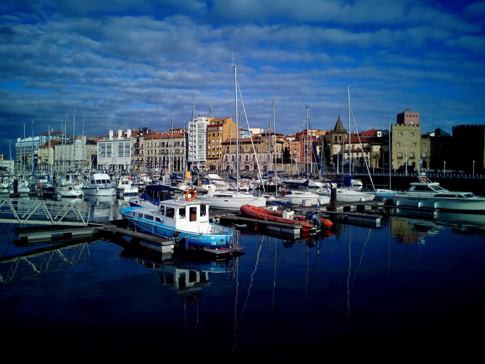

Gijón
Los romanos vivieron el sueño de Hispania desde unas Termas que miraban al mar. Fue en Gijón/Xixón, justo debajo de la explanada de la Iglesia de San Pedro, una de las atalayas urbanas más bellas de todo el Cantábrico asturiano.
Pero antes de los romanos, Gijón/Xixón ya alumbraba la realidad de la mano de una tribu de cilúrnigos, que también vivieron el sueño de los metales mirando al mar, sellando el destino de Gijón/Xixón como una ciudad vinculada para siempre a la metalurgia, al carbón, a la industria, a la ciencia, a la energía y al arte.
Gijón/Xixón fue la primera ciudad española "oscarizada" gracias al cineasta de origen asturiano José Luis Garci, y tuvo el primer instituto de Náutica y Mineralogía inspirado por su ilustrado Gaspar Melchor de Jovellanos.
Puerto pesquero, industrial y también deportivo, Gijón/Xixón ofrece al viajero una ciudad con un entorno verde único, donde destaca el Jardín Botánico Atlántico y la Laboral Ciudad de la Cultura con su Centro de Arte y Creación Industrial.
Oviedo
Dos monjes y una colina... Cuando Máximo y Fromestano fundaron un monasterio bajo la advocación de San Vicente, poco podían imaginar que aquel lugar sería el origen de la primera capital cristiana de la Península Ibérica. El nacimiento de Oviedo/Uviéu tiene todos los ingredientes legendarios y épicos de las grandes gestas y ciudades. Desde antaño conserva su impronta monástica y regia, y sigue siendo primigenia referencia del Camino de Santiago Primitivo, aquel cuyo fundador fue también un rey asturiano, D. Alfonso II.
La capital asturiana es hospitalaria y dinámica, donde cada día se puede experimentar algo diferente, y posee una intensa vida cultural y comercial. De humanas dimensiones, se recorre fácilmente y donde cada rincón encierra una sensación inesperada: el mercado del Fontán, una fuente Prerrománica de La Foncalada, una Catedral con una torre gótica y otra románica, un casco histórico que ha sido fuente de inspiración para literatos como Clarín o Pérez de Ayala, arquitectura civil contemporánea o una intensa agenda en la que destacan entre otras, la temporada de ópera o la ceremonia de entrega de los Premios Princesa de Asturias.
Avilés
Si Shakespeare la hubiera conocido, seguro se habría inspirado en ella y su mercader habría sido de Avilés, porque su ría, de noche y de día inspira la creación artística. Urbe comercial, de origen medieval y de gran tradición marinera, posee un casco histórico jalonado de palacios, jardines, fuentes, iglesias, casas porticadas, etc. que le confieren una atmósfera única. La dimensión y proporciones de su ría, y su paso por el mismo corazón de la ciudad, hacen de Avilés la única ciudad de Asturias con un potente caudal fluvial a los pies de su casco histórico, uno de los mejor conservados de todo el norte español.
Tierra de descubridores como Pedro Menéndez de Avilés - el conquistador de La Florida en el continente americano -, es una ciudad abierta a la innovación y con vocación artística. Además, el Avilés contemporáneo vivió también una gran revolución industrial de la mano de la siderurgia, lo que ha marcado una ‘fisonomía' posindustrial que inspiró al genio de la arquitectura Oscar Niemeyer la última de sus grandes obras internacionales, un centro cultural que lleva su nombre y que es símbolo de la renovación urbanística y sociológica que vive la ciudad. Así es Avilés, comercial, marinera y medieval.